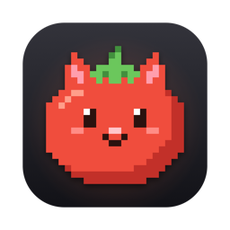

Sped-up demo. Click the island to try it.

TomeowA tiny Pomodoro timer that lives in your MacBook notch. When a focus round ends, a pixel cat runs out to call a break.
Download for macOSmacOS says it can't verify the app?
- Unzip the download and move Tomeow.app into your Applications folder.
- Open it. Tomeow isn't notarized yet, so macOS warns that it can't verify it. Click Done.
- Open System Settings → Privacy & Security, scroll down and click Open Anyway next to Tomeow. You only need to do this once.